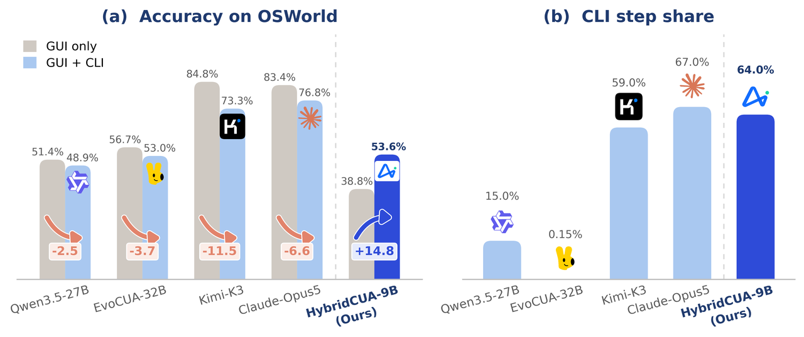
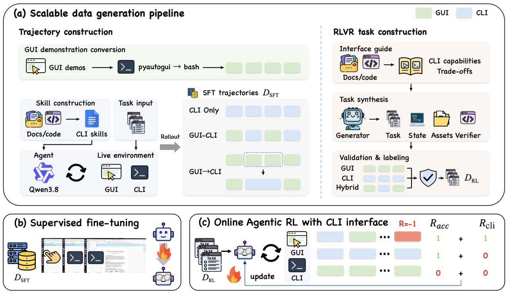
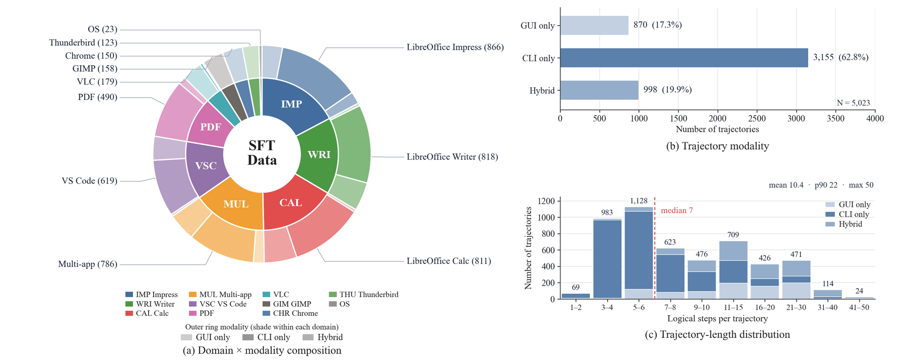
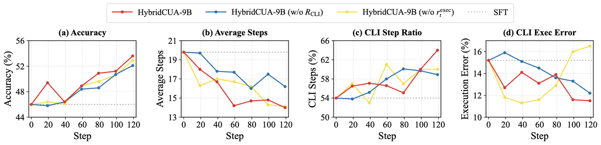
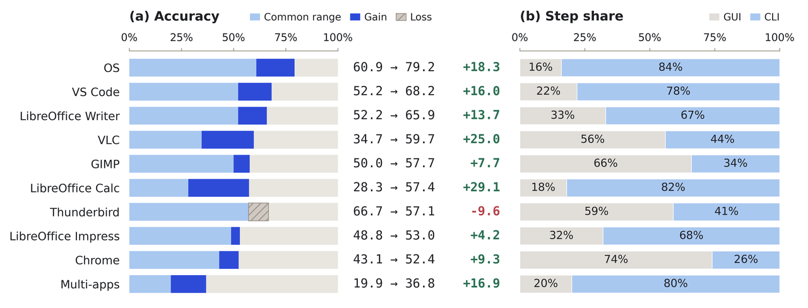
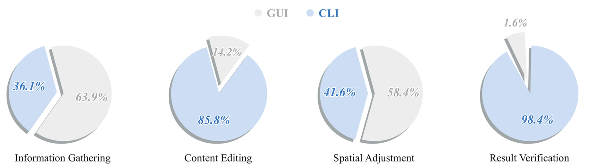
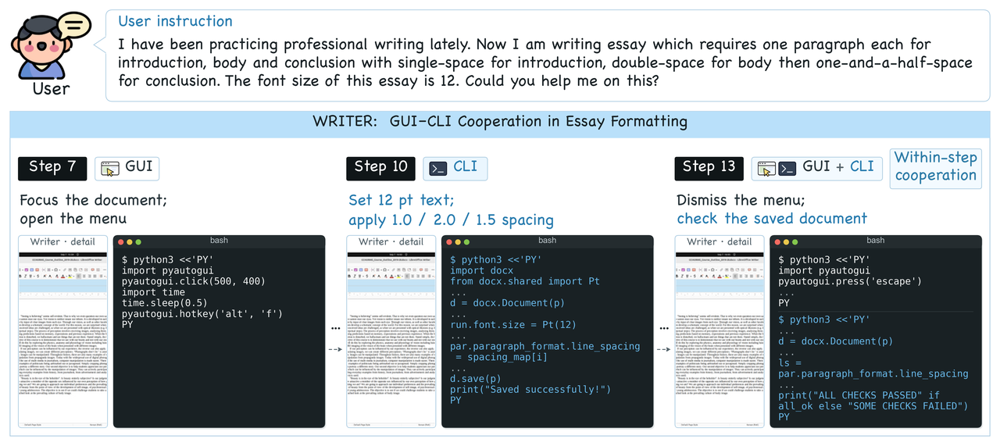
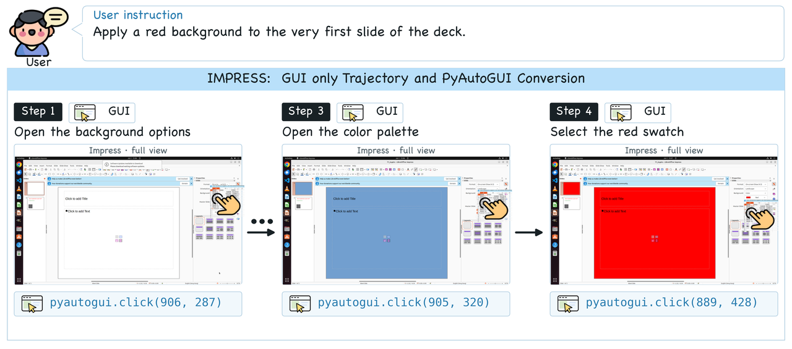
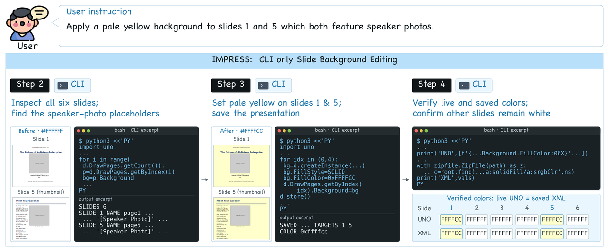
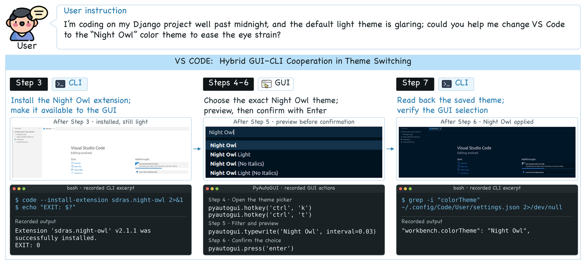

Abstract
Computer use agents (CUAs) have demonstrated strong capabilities in completing digital tasks. However, existing CUAs either rely solely on graphical user interface (GUI) interactions, which are often inefficient and error prone, or augment GUI interactions with application specific APIs or tools, which require substantial engineering effort and are difficult to scale across applications. We argue that the next generation of CUAs should combine GUI interactions with the command line interface (CLI), leveraging the generality of the GUI and the efficiency of shell commands. A critical challenge, however, is that current models do not know when or how to use the CLI during task execution. To address this challenge, we develop a data construction pipeline that produces three types of trajectories: GUI only, CLI only, and interleaved GUI and CLI trajectories. This pipeline results in HybridCUA-8K, containing 5K hybrid trajectories and 3K verified RLVR tasks. Building on these data, we propose a training framework with two stages: supervised fine tuning on the constructed trajectories, followed by reinforcement learning with our CLI aware rewards that encourages agents to use the CLI selectively and reliably. Experiments show that HybridCUA-9B achieves 53.6% accuracy on OSWorld, improving over the base model by 14.8 percentage points, and improves performance on WindowsAgentArena by 4.0 percentage points. These results demonstrate the effectiveness and cross platform generalizability of the hybrid GUI and CLI paradigm for computer use agents.
Access to a shell is not the bottleneck
Handing a capable MLLM a shell does not help — it hurts. All four representative agents lose accuracy on OSWorld once the CLI is exposed, by 2.5 to 11.5 points, and their CLI usage scatters from 0.15% of steps to 67%: some grind through GUI sequences a single command would replace, others reach for the shell too eagerly. HybridCUA-9B uses the CLI about as much as the most CLI-heavy baseline, yet gains 14.8 points where that baseline loses 6.6. Two gaps explain the deficit — GUI, shell, and code corpora are siloed, so the data never shows hybrid behaviour; and step imitation plus outcome rewards are blind to interface choice, unable to tell a well-chosen interface from a successful but inefficient path.

View the underlying numbers as a table
Method
Hybrid supervision need not be collected from scratch: many GUI action sequences admit an equivalent shell command. HybridCUA exploits this to build HybridCUA-8K — 5,023 trajectories across 11 application domains in three interaction modes, plus 3,000 RLVR tasks that each ship an executable verifier — then makes interface choice explicit in the reward.


Open-source UI-MOPD trajectories, re-expressed action by action as equivalent
pyautogui calls inside the unified wrapper.
Per-application CLI skills distilled from docs and reference code; a Qwen3.8-27B agent solves CUA-Gym tasks with the shell alone, keeping successful rollouts.
Either the agent chooses between both interfaces live, or terminal-typing segments of GUI trajectories are folded back into single commands and replayed.
One action space, two interfaces
Every executable interaction goes through the same bash action: a direct shell
command and a quoted Python heredoc of pyautogui calls are both just commands,
so switching interfaces costs the model no extra grammar. The wrapper is a
representation, not a reclassification — PyAutoGUI through bash is still
a GUI action. Keeping the two in distinct tools instead costs 7.2 accuracy points
under matched training.
At each step the agent sees the current screenshot and, after a direct command, its stdout/stderr. CLI-only trajectories therefore restrict the action interface, not the observation — they still contain screenshots.
bash(command="""python3 <<'PY'
import pyautogui
pyautogui.click(500, 400)
pyautogui.hotkey('alt', 'f')
PY""")bash(command="""python3 <<'PY'
import docx
d = docx.Document(p)
run.font.size = Pt(12)
d.save(p)
PY""")
Plus the control actions wait, terminate and
answer. Coordinates are predicted in a 1000×1000 space and mapped to the
display at execution time.
Two CLI-aware rewards
Supervised warm-up on the mixed corpus teaches the unified format and interface switching. Online GRPO then fixes what a plain accuracy reward cannot: successful rollouts score the same despite unnecessary switches, and a failed command goes unpenalised if the task eventually completes.
RCLI = 𝟙[Success(τ)] · 𝟙[b(τ) = b★]
Every RLVR task carries a label b★ for whether CLI use has a clear execution advantage, obtained by sampling 16 rollouts per interface mode and ranking them. A successful rollout is rewarded only when its CLI usage matches that label — so the model learns selective, not maximal, shell use.
rtexec = −1 if the command fails, else 0
Terminal feedback localises the blame. A shell-level failure penalises exactly the tokens of the action that caused it, so command reliability improves without muddying the trajectory-level signal. Non-CLI steps get zero.
Training and evaluation configuration
Results
HybridCUA-9B reaches 53.6% in 14.0 average steps — best on both metrics among comparably sized models. Merely exposing the CLI cuts steps by 9.5 but accuracy from 38.8% to 18.4%, so the shorter trajectories reflect early failure, not efficiency. Trained, the second interface pays off at both stages: 46.0% vs 44.2% after SFT, 53.6% vs 50.4% after RL, with the two branches sharing the same base model, comparable SFT corpora, and identical RLVR tasks and RL steps.
Out-of-distribution generalisation
On OSWorld-MCP, HybridCUA-9B scores 47.1%, 9.1 points over Qwen3.5-9B and on par with API-integrated ToolCUA-8B. On WindowsAgentArena it reaches 36.0%, +4.0 over its base model — issuing PowerShell commands despite training only on Linux shells, which suggests what transfers is when to delegate to a shell rather than memorised commands.
Ablations
SFT data composition
Mixing all three trajectory types beats any single type.
Action schema
A single bash action against two separate tools.

What the model routes where
Interface choice tracks the interaction the task actually needs. The CLI dominates OS tasks (84% of steps), where commands reach files and system settings directly; the GUI dominates Chrome (74%), where the work lives on a rendered page. By operation, content editing (85.8% CLI) and result verification (98.4% CLI) suit direct manipulation and state inspection, while spatial adjustment (58.4% GUI) needs the visual feedback loop — and information gathering splits nearly evenly, which is the point: neither interface wins categorically, so routing has to be learned per situation.

View the underlying numbers as a table

Cooperation, not just coexistence
In an essay-formatting task the interfaces cooperate at two levels. Across the trajectory,
GUI steps focus the Writer window and open its menu (step 7) while CLI steps use python-docx to
apply 12-point text and single, double and one-and-a-half line spacing before saving (step 10).
Within a single step, step 13 dismisses the menu with pyautogui and then reopens the saved
file through the shell to check font size and spacing — both in one bash call.

Trajectory types in the corpus
One representative example of each of the three construction routes behind HybridCUA-8K.


#FFFFCC), saves the presentation, and cross-checks the live UNO state against the
saved XML while confirming that the other four slides remain unchanged.

workbench.colorTheme setting. Direct commands handle setup and state inspection,
while the GUI is retained for the visually grounded selection step.
Case Studies
Three complete, successful OSWorld rollouts from the appendix, each pairing the pre-action screenshot with the action the model issued at that step. Use the step buttons to walk through a trajectory; every one of these scored 1.0 with the task evaluator.
BibTeX
@misc{chen2026hybridcua,
title = {HybridCUA: Learning to Orchestrate GUI and CLI for Computer-Use Agents},
author = {Chen, Tongbo and Niu, Junbo and Lu, Zhengxi and Lian, Niu and
Tang, Fei and Yan, Yuchen and Hong, Yike and Du, Yong and
Liu, Yizhou and Chen, Bofan and Shen, Yongliang},
year = {2026},
eprint = {2609.38008},
archivePrefix = {arXiv},
primaryClass = {cs.CV},
url = {https://arxiv.org/abs/2609.38008}
}